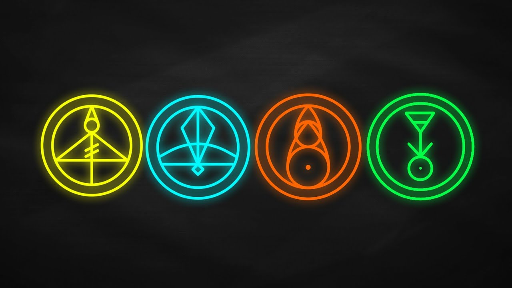

About
The Owl House is an animated Disney show created by Dana Terrace. The series premiered on January 10, 2020 on Disney Channel. The entire first season is currently available on Disney Plus.
The show is about a 14 year-old girl, Luz Noceda, who wanders into a magical realm where demons and witches live known as The Boiling Isles and trains with her mentor, Eda the Owl Lady, to become a witch like her. While on The Boiling Isles, Luz makes new friends, goes on various adventures, and discovers her own way to do magic. After some time being there, she begins to change the people and world around her for the better.
Season 1 Rundown
There's alot of good stuff to cover from season 1. The following list will point out a few highlights and important bits of info. SPOILER WARNING!
- Luz arrives in The Boiling Isles after following an owl through a portal door to retrieve a book from her favorite series
- Luz learns how to do magic her own way in the fourth episode
- Currently, Luz knows 4 spells
- Because Luz is a human, she can't cast spells normally like how a witch can. Instead, she has to use glyphs
- Eda enrolls Luz at Hexside, a school on the Boiling Isles for witchlings that she herself went to when she was a kid
- Eda is cursed. She has been since she was a kid
- Eda has a sister. Her sister's name is Lilith. Lilith is the head of the Emperor's Coven, which exists to enforce the emperor's will
- Magic is controlled through the emperor's coven system, which restricts a witch's power so they can only do one type of magic. There are 9 main covens, with the Emperor's Coven being one of them
- Not being part of a coven is illegal. Eda never joined a coven and is considered a wild witch
- The Emperor's name is Belos
Glyphs
Currently, Luz only knows 4 spells that she can cast using glyphs. Below is an image showing each glyph and some basic info about each glyph. (PSST! Hover over the picture below to see something cool!)
From left to right, the four glyphs are known as the Light glyph, Ice glyph, Fire glyph, and Plant glyph. To activate glyphs, Luz can either tap the paper that they were drawn on or she can activate them from a distance using Eda's staff. The light glyph produces a little ball of light. The plant glyph can produce plants. The fire glyph produces fire and can melt objects. The ice glyph produces ice. Currently, not much is known about glyphs.